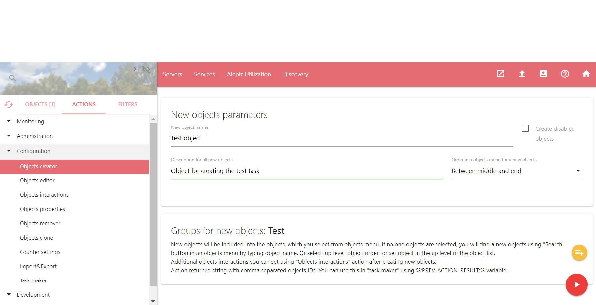
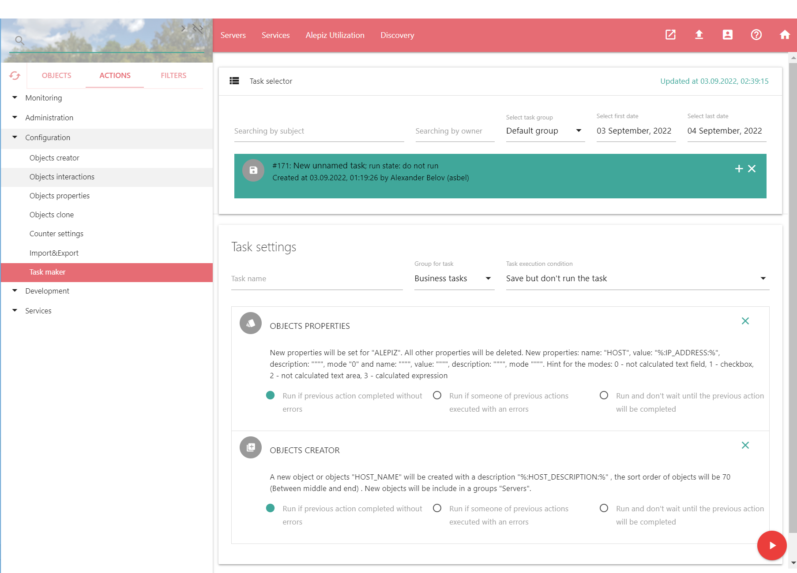
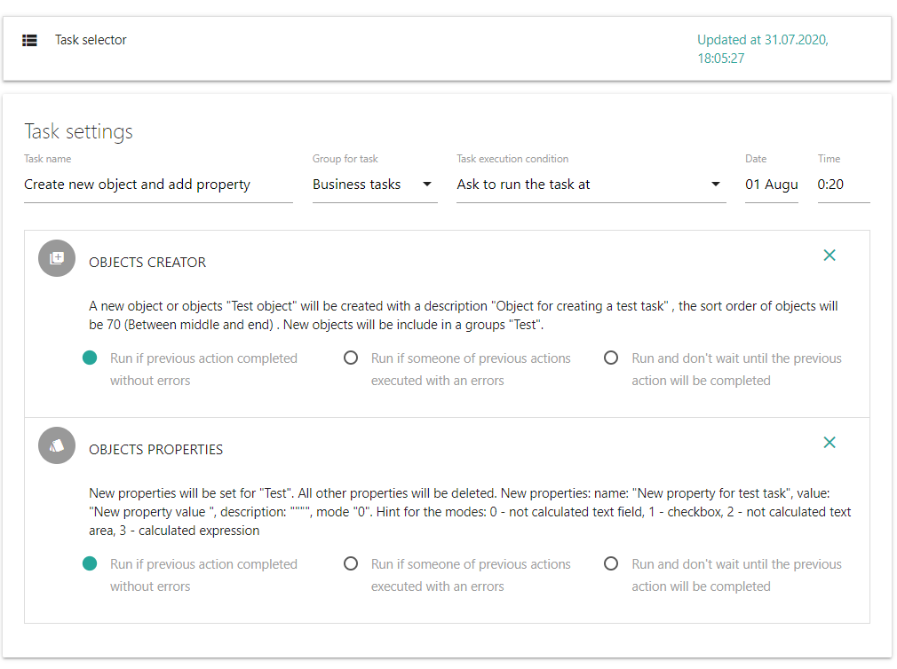
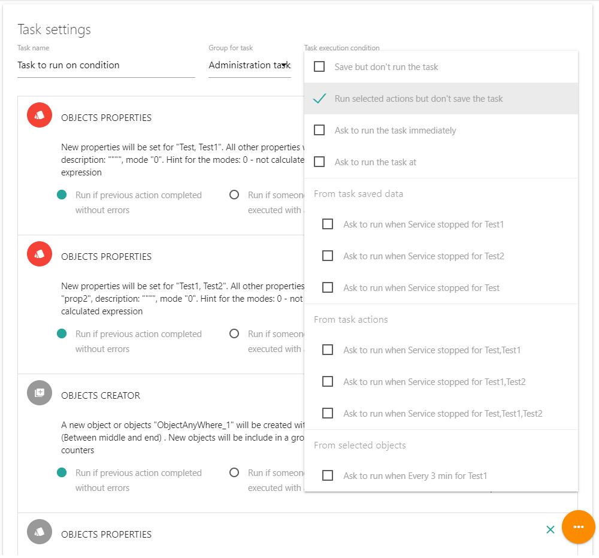
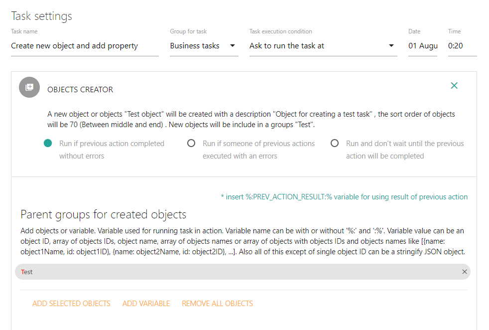
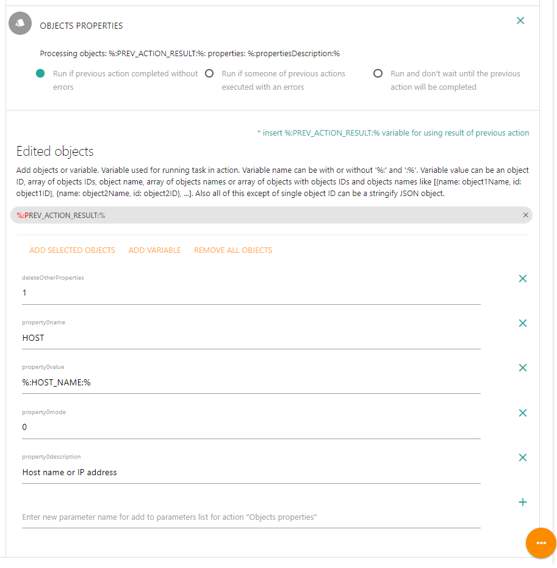
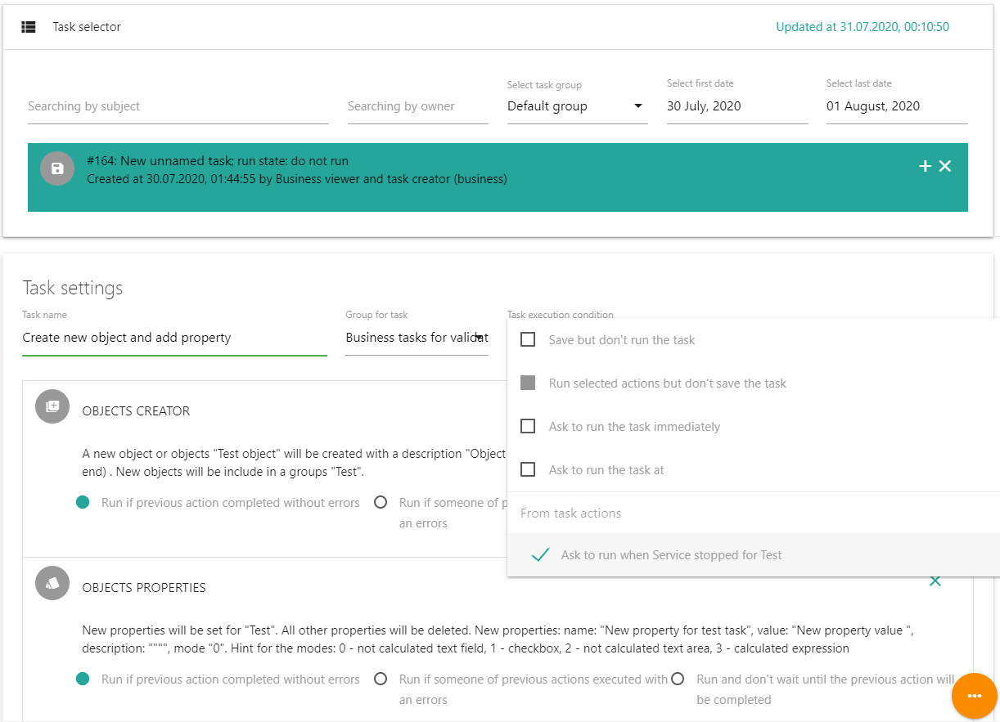
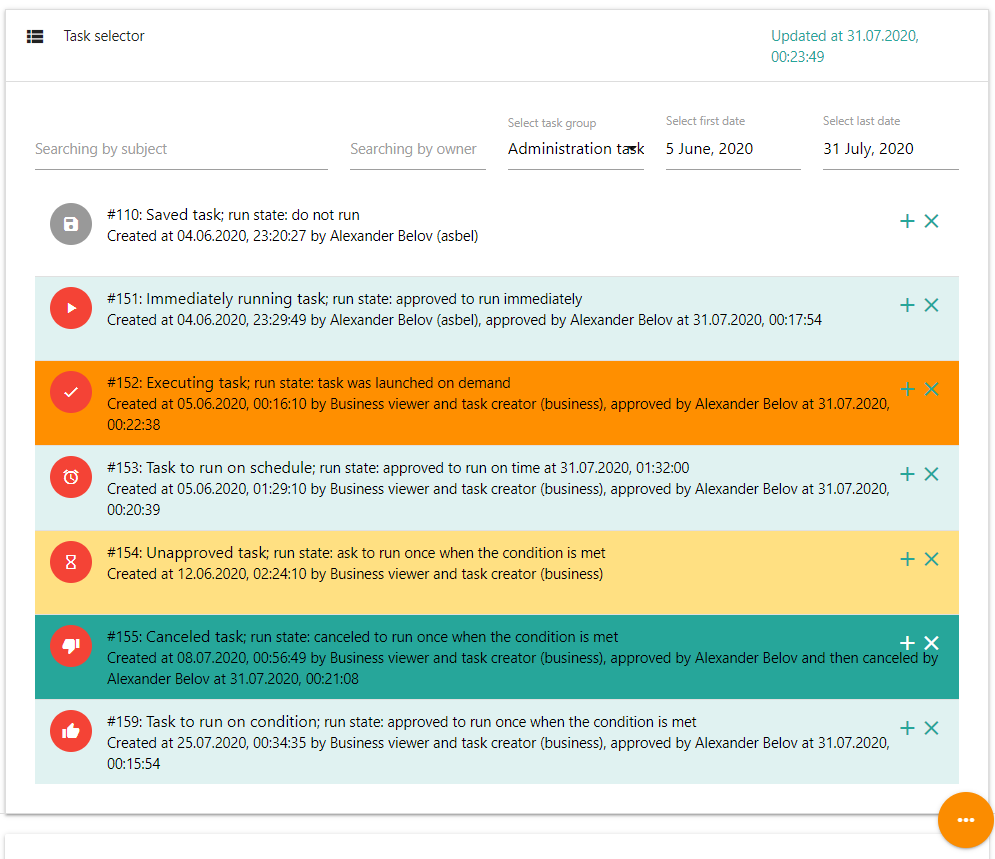
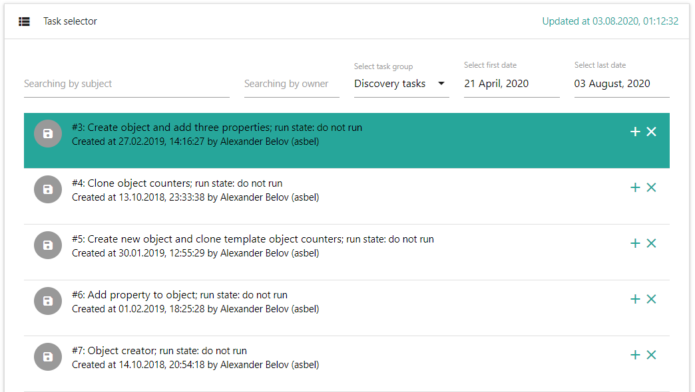

Возвращаемое значение: JSON объект с возвращаемыми значениями действий из которых состоит задача: {<tasksActionsID1>: <value1>, <tasksActionsID2>: <value2>, ....}
Предназначение Task maker
Task maker служит для управления задачами. Задачи необходимы для автоматизации различных процессов и состоит из последовательности действий. Любое действие, которое можно выполнить, можно поместить в задачу. Можно организовать ветвление процесса выполнения действий в задаче в зависимости от удачного или неудачного результата выполнения действия. Действия могут выполняться последовательно или в асинхронном режиме. Запускать задачи можно в ручном режиме, в автоматическом режиме в зависимости от данных, возвращаемых счетчиками или в автоматическом режиме по расписанию. Кроме того, задачи могут быть запущены автоматически с помощью счетчиков, которые используют сборщик "task-runner".
В качестве примера использования задач может служить автоматическое снятие дампа памяти процесса, если у приложения высокое потребление ресурсов процессора. Либо после остановки сервиса можно запустить задачу по его обновлению. Или при недоступности сервиса можно запустить задачу, которая запустит резервирующий сервис.
Создание новой задачи
Для создания новой задачи необходимо выбрать требуемое действие и объекты, над которыми планируется произвести действие. По возможности, необходимо установить все необходимые параметры для действия. После этого необходимо нажать на кнопку создания задачи . Для создания задачи у пользователя должны быть права на использование действия в задаче. Иначе кнопка добавления действия в задачу не будет отображаться.
В результате будет создана новая задача и в нее будет добавлено выбранное действие. Если в задаче должно присутствовать несколько действий, необходимо повторить операцию и добавить все действия в новую задачу. В случае, если нет возможности корректно установить значение параметра для действия, его можно будет отредактировать в дальнейшем в уже созданной задаче. После добавления всех действий необходимо выбрать действие "Task maker" для окончательного формирования задачи. Для этого, в форме Task settings необходимо ввести имя задачи, выбрать группу, в которой она будет находится и выбрать условие ее запуска. При необходимости нужно произвести настройку параметров действий, добавленных в задачу.
Настройка задачи
В списке "Task selector" необходимо выбрать задачу для редактирования. Форма редактирования задачи находится под списком задач и называется "Task settings". Во время редактирования задачи можно свернуть список задач "Task selector", нажав на его заголовок, как показано ниже.
Название задачи (Task name)
Можно изменить название задачи. Для этого необходимо поменять поле Task name. Новая задача не имеет названия и отображается только у пользователя, который ее создал. Сохранить задачу без названия невозможно.
Группа для задачи (Group for task)
Group for task служит для изменения группы, в которую входит задача. Группы будут отображаться у пользователей в зависимости от установленных прав. Таким образом можно переместить задачу в группу и скрыть ее от других пользователей. Права доступа к группам задач можно изменить в Administration\Tasks groups editor.
Можно настроить рабочий процесс (workflow) для того, чтобы в поле Group for task автоматически подставлялась следующая группа задач, и отправлялось уведомление о том, что задача перемещена из одной группы в другую. Например, пользователь создает новую задачу в Default group. Потом он ее редактирует и сохраняет, при этом в поле Group for task автоматически подставлена группа "Tasks for execution". В результате, после редактирования задача попадает в группу "Tasks for execution" и администраторам будет отправлено письмо о том, что требуется подтверждение выполнения задачи. Процесс настройки рабочих процессов описан ниже.
Условие выполнения задачи (Task execution condition)
Можно выбрать условие, когда задача будет выполнена:
- Save but don't run the task - сохранить сделанные в задаче изменения, но не запускать ее. Может использоваться для создания шаблонов задач или для задач, которые запускаются с помощью счетчиков, используя сборщик "task-runner".
- Run selected actions but don't save the task - запустить выбранные действия в задаче без сохранения сделанных изменений в задаче. Можно выбрать только определенные действия в задаче, которые необходимо запустить. Для этого необходимо нажать на иконку действия. Если иконка красного цвета, действие запустится, если серого - не запустится. Если у пользователя нет прав на запуск хотя бы одного из действий в задаче, эта опция не будет доступна. 
Следующие опции позволяют сделать запрос администраторам на выполнение задачи. Если администратор подтвердит возможность запуска задачи, она будет запущена в зависимости от указанного условия. С помощью workflow можно настроить оповещение администраторов на подтверждение сделанных изменений. Если у пользователя есть права на выполнение всех действий задачи, он может самостоятельно подтвердить возможность ее запуска.
- Ask to run the task immediately - Запросить у администраторов немедленный запуск задачи.
- Ask to run the task at - Запросить у администраторов запуск задачи в определенные дату и время.
Следующие опции позволяют сделать запрос администраторам на выполнение задачи в зависимости от значений, возвращаемых счетчиками для выбранных объектов. Например, можно выполнить задачу при нехватке памяти на платформе, либо после остановки сервиса, либо при пропадании пакетов до хоста. Можно выбрать несколько условий выполнения задачи.
Для того, чтобы можно было установить условие для выполнения задачи от определенного счетчика, в действии Configuration/Counter settings для счетчика необходимо поставить признак "Condition for task"
В зависимости от настроек задачи может быть отображено 3 группы опций:
- From task saved data - Если задача уже был сохранена с условием выполнения в зависимости от значений возвращаемых счетчиками, в этой группе будут перечислены пары "счетчик" - "объект" от которых зависит выполнение задачи.
- From task actions - Если в действии есть специальный параметр "o", содержащий объекты, над которыми будет выполнено действие, то в этой группе будут перечислены общие счетчики для объектов из каждого действия. Например, задача состоит оз двух действий: обновить сервисы и применить скрипт к базам данных сервисов. В первом действии в качестве объектов будут перечислены сервисы, для которых требуется сделать обновление. У них будет один общий счетчик "Сервис остановлен". Во втором действии в качестве объектов будут перечислены базы данных сервисов и у них будет один общий счетчик "База данных не используется". В этом случае в группе "From task actions" будет отображено две опции: "Сервис остановлен" и перечислены сервисы из первого действия и "База данных не используется" и перечислены базы данных из второго действия.
- From selected objects - Если для действия Task maker в системном меню Objects выбраны какие-то объекты, то в данной группе будут перечислены пары "счетчик" - "объект" от которых можно сделать зависимость выполнения задачи.
Алгоритм исполнения задачи в зависимости от значений, возвращаемых счетчиками
Параметр действия "o" позволяет настроить выполнение действия в зависимости от значений счетчиков от которых зависит задача. В свойстве действия параметр "o" отображается в виде формы выбора объектов Object selector (для отображения свойств действия необходимо нажать на действие). По наличию Object selector можно определить, есть ли в действии этот параметр или нет. На скриншоте ниже Object Selector находится снизу с заголовком "Parent groups for created objects"
Если в действии есть параметр "o" c объектами и в условии выполнения задачи есть счетчики, которые связаны с объектами из параметра "o", то по мере того, как счетчики для соответствующих объектов будут принимать значение true, действие будет выполняться отдельно для каждого из этих объектов. После того, как действие выполнится для всех объектов, перечисленных в параметре "o", начнется выполняться следующее действие. Таким образом выполнение следующего действия может начаться до того, как все счетчики, от которых зависит задача, примут значение "true".
Важно понимать
- Пока первое действие не выполнится для всех объектов, следующее действие не начнет выполняться, даже если есть условия для его выполнения (если не настроено условие по запуску действия без ожидания завершения предыдущего действия)
- Если в условии для выполнения задачи счетчики связаны не со всеми объектами, которые присутствуют в действии, для таких объектов действие начнет выполнятся только после того, как сработают все счетчики из условия для задачи.
- Если в условии для выполнения задачи счетчики связаны как с объектами, которые присутствуют в действии, так и с другими объектами, действие будет выполняться по мере того, как будут срабатывать счетчики для объектов из этого действия. Как только сработают счетчики для всех объектов действия, начнет выполняться следующее действие, не смотря на то, что выполнены не все условия для исполнения задачи.
- Проверка условий задачи осуществляется только один раз. Если сработало условие для выполнения действия, а потом условие стало неблагоприятным, задача все равно продолжит выполнятся.
- Задачи выполняются одним потоком, но в асинхронном режиме. То есть если в одной задаче возникла пауза или действие в задаче выполняет асинхронную операцию, в это время могут выполняться другие задачи. Если условия задачи позволяют, действие будет выполняться сразу для нескольких объектов, к которым оно применяется.
Примеры
- Действие по обновлению нескольких сервисов должно выполняться после остановки сервисов. Если одновременно остановилось часть сервисов, действие будет выполнено для тех сервисов которые остановились. В этом случае действие не будет разделено и в качестве параметра "o" для действия будут выступать все остановившиеся сервисы. Для остальных сервисов действие будет выполняться по мере их остановки.
- Задача состоит из действий по обновлению сервиса, запуску обновленного сервиса и удалению неиспользуемых файлов, которые остались после обновления сервиса. После того, как сработает счетчик "Сервис остановлен", выполнится первое действие и сервис будет обновлен. Далее выполнится второе действие по запуску этого сервиса. Не смотря на то, что условие изменилось, и счетчик "Сервис остановлен" примет значение "false", выполнение задачи и действий, связанных с этим сервисом будет продолжено. Поэтому выполнится и третье действие по удалению неиспользуемых файлов.
- Стоит задача - обновить сервисы и выполнить скрипт по модификации базы данных для этих сервисов. Для этого в условии для выполнения задачи добавлен счетчик "Сервис остановлен", который связан с объектами - сервисами и счетчик "База данных не используется", который связан с объектами - базами данных. Задача состоит из двух действий: обновление сервисов, где в параметре "o" перечислены сервисы, которые требуется обновить, и запуск скрипта на базе данных, где в параметре "o" перечислены базы данных, для которых требуется выполнить скрипт. В результате, по мере того, как сервисы будут останавливаться, будет срабатывать счетчик "Сервис остановлен" и для каждого сервиса будет выполняться первое действие по обновлению сервисов. После того как все сервисы из первого действия будут обновлены, запустится второе действие по запуску скрипта на базах данных. Как только сработает счетчик "База данных не используется" для соответствующей базы данных, на этой базе данных будет запущен скрипт из второго действия. Если счетчик "База данных не используется" для некоторых баз данных сработал до того, как запустилось действие по запуску скрипта на базах данных, для этих баз будет запущено одно действие и ему будет переданы в качестве параметра "o" все неиспользуемые в настоящий момент базы данных.
Редактирование действий в задаче
Список действий в задаче
С помощью операции Drag And Drop можно изменить порядок действий в задаче. Для этого необходимо нажать мышкой на действии и перетащить его в нужную позицию.
Если нажать на кнопку "x" на действии, действие будет удалено из задачи
Можно выбрать условия выполнения действия:
- Run anyway - запустить действие в любом случае
- Run if previous action completed without errors - запустить действие, если предыдущее действие завершилось без ошибок
- Run if someone of previous actions executed with an errors - запустить действие, если любое предыдущее действие завершилось с ошибкой
- Run and don't wait until the previous action will be completed - Запустить не дожидаясь завершения предыдущего действия. Действия будут запущены в асинхронном режиме.
Важно понимать
Условие 1. "Run if previous action completed without errors" относится только к предыдущему действию.
Условие 2. "Run if someone of previous actions executed with an errors" относится к любому из предыдущих действий. После выполнения действия с этим условием счетчик ошибок очищается.
Поэтому если стоит задача обработки ошибок, то действие для обработки ошибок нужно ставить в конец задачи. Например, есть задача по обновлению сервиса и его последующего запуска. Если обновление сервиса прошло неуспешно, то необходимо скопировать файлы в каталог сервиса из резервной копии. Действия для подобной задачи необходимо располагать в следующем порядке:
- Обновить сервис (условие "Run if previous action completed without errors")
- Запустить сервис (условие "Run if previous action completed without errors")
- Вернуть в сервис файлы из резервной копии (условие "Run if someone of previous actions executed with an errors")
Действие
У каждого действия может быть установлена своя иконка. Иконка устанавливается в файле настроек действия. Под названием действия может находиться его описание, содержащее текущие параметры. Описание так же может быть настроено в файле настроек действия. Если нажать на действии, откроется форма с параметрами действия. Каждый параметр имеет свое название. В файле настроек действия можно добавить описание к параметрам. В этом случае описание будет отображаться около названия параметра. Редактирование файла настроек действия производится через Action editor
Объект "o" и форма Object selector
Действие может содержать объект "o" и элемент Object selector. В примере выше он называется Edited objects, название можно установить настройках действия. В этот элемент можно добавить объект или объекты, выбранные в системном меню Objects. Для этого необходимо выбрать объект и нажать на кнопку ADD SELECTED OBJECTS. Для удаления объекта необходимо нажать на кнопку "x" справа от объекта. Для удаления всех объектов необходимо нажать на REMOVE ALL OBJECTS.
Технически объект "o" добавляется при создании действия через Action editor как обычное поле формы, например:
<input type="hidden" name="o" value="[{id:10, name='Object1'},{id:20, name='Object2'}]"/>или
<select id="o">
<option value="10">Object 1</option>
<option value="20">Object 2</option>
</select>или (пример Object Selector)
<select title="Objects list"
description="Select objects or add a new objects for something."
add-custom-object="a new objects"
id="o"
multiple="1"
class="hide">
<option value="Object 1">Object 1</option>
<option value="Object 2">Object 2</option>
</select>Вместо имен объектов можно добавить переменную, которая содержит информацию об объекте. Значение переменной может быть:
- Идентификатор объекта: <objectID>
- Имя объекта: <objectName>
- Массив с идентификаторами объектов: [<objectID1>, objectID2>, ...]
- Массив с именами объектов: [<objectName1>, <objectName2>, ...]
- Массив объектов с идентификаторами объектов и именами объектов: [{name: <objectName1>, id: <objectID1>}, {name: <objectName2>, id: <objectID2>}, {..}, ....]
Все перечисленное кроме одного идентификатора или имени объекта может быть JSON объектом, представленным в виде текстовой строки (stringified JSON object)
Параметры действия
Параметры действия это текстовые поля, в которые записаны значения, выбранные в процессе сохранения действия. Если в настройках действия для параметра задано описание, оно отобразится рядом с названием параметра. В некоторых случаях параметр действия можно удалить, для этого служит кнопка "x" справа от параметра. Если такой кнопки нет, значит этот параметр является обязательным для действия. В конце списка параметров может находится текстовое поле с кнопкой "+". Это означает, что к действию можно добавить параметр. Для добавления параметра необходимо точно ввести его название.
Переменные в свойствах действий
При запуске задачи с использованием счетчика, используя сборщик Task runner, в свойствах действия можно использовать переменные. Переменные должны быть определены в счетчике, который запускает выполнение задачи или в родительских счетчиках.
Переменная %:PREV_ACTION_RESULT:%
В качестве значения параметра можно использовать системную переменную %:PREV_ACTION_RESULT:%. Значением этой переменной будет результат выполнения предыдущего действия в задаче.
Права пользователей
Новая задача автоматически появится в группе Default group и отображается только у пользователя, который ее создал. После того, как задаче будет присвоено имя, она будет отображаться у других пользователей. Сохранить задачу без имени невозможно.
Задачи будут отображаться в зависимости от наличия прав пользователя на просмотр задач в группе и просмотр действий, используемых в задаче. Если у пользователя не прав на просмотр задач в группе, группа с задачами отображаться не будет. Права на группу задач назначаются в действии Tasks groups editor. Если на одно из действий, используемых в задаче, у пользователя нет прав на просмотр, задача отображаться не будет.
Для запуска задачи необходимо установить условие, при котором задача должна была выполнена. Такими условиями могут быть немедленное выполнение задачи, выполнение задачи в определенное время, либо выполнение задачи при установке значения счетчика в "true", например, генерация события счетчиком на базе сборщика event-generator. После сохранения задачи необходимо подтвердить необходимость ее выполнения. Если у пользователя есть права на выполнение всех действий, используемых в задаче, то он сможет это сделать самостоятельно. Если таких прав нет, то подтвердить необходимость выполнения задачи должен пользователь, у которого есть такие права. У подтвержденной задачи меняется иконка и появляется информация о том, какой пользователь подтвердил задачу.
Список задач Task selector
Task selector показывает либо все задачи за последние сутки, либо последние 20 задач, если за последние сутки количество задач было меньше 20. Если нажать на заголовок Task selector, можно скрыть список задач
Управление задачами в списке
Задачи в списке отсортированы по дате изменения. Сверху списка находятся задачи, которые были изменены позже.
Если нажать на "x" на задаче, он будет помечена для удаления и после выполнения действия будет удалена.
Кнопка "+" служит для объединения двух задач между собой. Для объединения задач необходимо выбрать одну задачу и нажать на второй задаче кнопку "+". После этого к выбранной задаче добавится задача, на которой была нажата кнопка "+".
Чтобы отменить выбор задачи нужно нажать на выбранной задаче еще раз.
Если нажать на кнопку "+" на уже выбранной задаче, задача будет скопирована в новую задачу.
Фильтрация задач
В полях для фильтрации можно использовать символы "_" (любой один символ) или "*" (ноль или более любых символов).
Task ID, name or object name (search by all groups)
Фильтр задач по названию задачи либо по ее идентификатору либо по именам объектов, которые используются в задаче. Начните вводить символы и если они присутствуют в соответствующих полях поиска, эти задачи будут показаны в списке. Если вводятся цифры, поиск будет осуществляться по идентификатору задачи либо по объектам. Поиск производится по всем группам.
Creator
Поиск задач по создателю. Начните ввод логического имени создателя задачи для фильтрации задачи по нему. Поиск производится по всем группам.
Group
Для отображения задач из соответствующей группы необходимо выбрать группу
Start date и End date
Фильтр задач по дате изменения. Если выбрать начальную и конечную дату, в списке отобразятся только те задачи, которые были изменены в выбранный промежуток времени. Если поиск не производится по названию задачи либо по ее идентификатору, то ищутся задачи только в выбранной группе. В противном случае поиск производится по всем группам задач.
Описание файла настроек
В каталоге с действием находится файл настроек config.json, содержащий следующие настройки:
- actionForObjects - действие, которое будет запускаться при нажатии на список объектов для задачи и для действий
- refreshTaskList - период обновления списка задач в мс. По умолчанию 15000
- offsetDaysForRunTask - при автоматическом создании даты выполнения задачи этот параметр отвечает за количество дней, которое будет прибавлено к текущей дате.
- defaultTimeForRunTask - при автоматическом создании даты выполнения задачи этот параметр отвечает за время, которое будет установлено для выполнения задачи.
Автоматическое создание названия новой задачи
Настройка автоматического создания названия новой задачи выполняется через файл конфигурации Task maker - config.json, который находится в каталоге с действием. Изменить конфигурацию действия Task maker можно через Action editor. Автоматическое название новой задачи выполняется на основе анализа и преобразования названий объектов, которые входят в задачу.
За настройку отвечает объект "taskNameRules". Если объекта "taskNameRules" не существует, Автоматическое создание названия новой задачи не будет выполняться. Объект включает в себя параметры:
- maxObjectsStrLen - все названия объектов объединяются в строку с разделителем ",". Если длина строки меньше чем значение этого параметра, то автоматическое название задачи будет сформировано из этой строки с объектами. В конце полученной строки добавляется строка из параметра taskNameSuffix. По умолчанию 50.
- taskNameSuffix - В конец полученной строки будет добавлен данный суффикс. По умолчанию ": ".
- regExpRules - массив с правилами преобразования названий объектов, входящих в задачу. Каждое правило последовательно применяется к каждому объекты. Если все объекты, входящих в задачу, соответствуют регулярному выражению правила (параметр testExpr), выполняется замена (параметр replExpr) c помощью функции JavaScript replace(new RegExp(<testExpr>, 'gi'), <replExpr>). Далее все полученные строки соединяются в одну строку с разделителем ",". Если длина полученной строки меньше, чем значение параметра maxObjectsStrLen, то автоматическое название задачи будет сформировано из этой строки с объектами. В противном случае будет выполнен переход к следующему правилу.
- testExpr - регулярное выражение для проверки названий объектов на соответствие правилу
- replExpr - выражение, которое используется для замены в названии объекта. Замена выполняется c помощью функции JavaScript replace(new RegExp(<testExpr>, 'gi'), <replExpr>).
- maxObjectsStrLen все полученные названия объектов объединяются в строку с разделителем ",". Если длина строки меньше чем значение этого параметра, то автоматическое название задачи будет сформировано из этой строки с объектами. По умолчанию 50. В конце полученной строки добавляется строка из параметра taskNameSuffix.
- settings Настройка автоматического создания названия новой задачи (нажмите для того, чтобы развернуть)
"taskNameRules": { "maxObjectsStrLen": 100, "taskNameSuffix": ": ", "regExpRules": [ { "testExpr": "^([^ ]+).*$", "replExpr": "$1: ", "maxObjectsStrLen": 100 } ] },
Настройка цветов и иконок отображения задач
За настройку цветов отвечает параметра launchModeTheme. В качестве ключа передается идентификатор условия выполнения задачи.
- icon - иконка для условия выполнения задачи из списка Google material icons
- color - цвет фона для задачи из списка Materialize colors
- comment - название условия выполнения задачи
- nextLaunchMode - следующее условие выполнения задачи при нажатии на иконку при подтверждении или отмене выполнения задачи.
Настройка рабочего процесса
Настройка рабочего процесса обслуживания задач описана в разделе справки Описание настроек сервера выполнения задач taskServer.json.